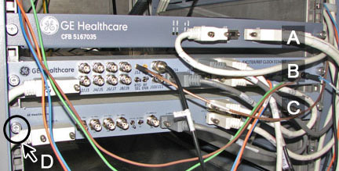

- Object ID: 00000018WIA30501450GYZ
- Topic ID: id_2021715 Version: 2.6
- Date: Sep 9, 2025, 2:44:17 PM
Removing the MNS exciter
Procedure
- Make sure that you have read and understood the electrical safety requirements before starting this procedure. See Electrical Safety.
- Shut down and power off the host computer. See Shutting down the host computer.
- Perform LOTO on the RF amplifier and the PEN cabinet (magnet room electronics). Applying LOTO - RF Subsystem (magnet room electronics) and Applying LOTO - PEN Cabinet (magnet room electronics).
- Remove the thumbscrews that secure the MNS exciter to the PEN cabinet.
Figure 1. MNS Exciter Cabinet 
A CAN fiber-optic board (CFB) B NB exciter board C MNS BB exciter board D Thumbscrews securing module to cabinet frame - Disconnect all the cables to the MNS exciter. Be sure to note cable locations.
- Carefully slide the MNS exciter out of the PEN cabinet.